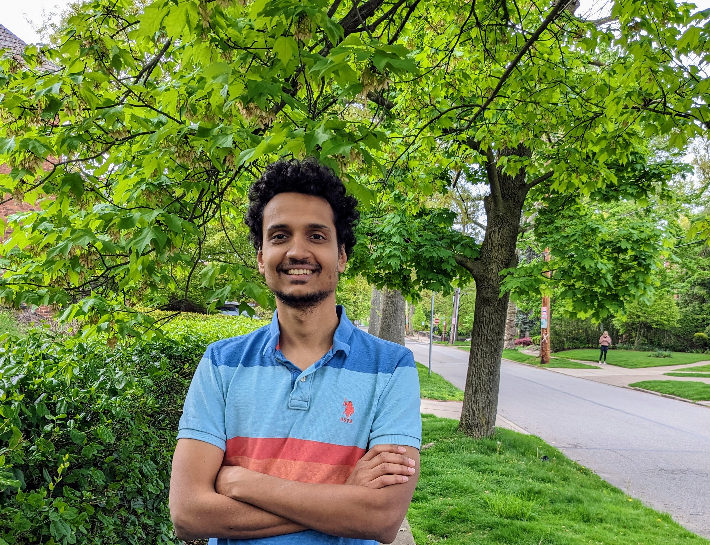

Nikhil Vyas
nikhil at g.harvard.edu
vyasnikhil96 at gmail.com (Preferred)
Twitter

I am a postdoc at Harvard hosted by Prof. Demba Ba, Prof. Boaz Barak, Prof. Lucas Janson and Prof. Cengiz Pehlevan. Before this, I was a graduate student at the TOC group at MIT where I was advised by Prof. Ryan Williams.
My current research focusses on deep learning, most recently on optimization.
Publications (ML)
SOAP: Improving and Stabilizing Shampoo using Adam.
Nikhil Vyas*, Depen Morwani*, Rosie Zhao, Itai Shapira, David Brandfonbrener, Lucas Janson, Sham Kakade
Connections between Schedule-Free SGD, Accelerated SGD Variants, and Weight Averaging.
Depen Morwani*, Nikhil Vyas*, Hanlin Zhang, Sham Kakade
Loss-to-Loss Prediction: Language model scaling laws across datasets.
David Brandfonbrener, Nikhil Anand, Nikhil Vyas, Eran Malach, Sham Kakade
Mixture of Parrots: Experts improve memorization more than reasoning.
Samy Jelassi, Clara Mohri, David Brandfonbrener, Alex Gu, Nikhil Vyas, Nikhil Anand, David Alvarez-Melis, Yuanzhi Li, Sham Kakade, Eran Malach
Understanding Critical Batch Sizes: Scheduling and Batch-Size Invariance in Data-constrained Pre-training.
Hanlin Zhang, Depen Morwani, Nikhil Vyas, Jingfeng Wu, Difan Zou, Udaya Ghai, Dean Foster, Sham Kakade
AdaMeM: Memory Efficient Momentum for Adafactor.
Nikhil Vyas, Depen Morwani, Sham Kakade
AdaMeM: Memory Efficient Momentum for Adafactor.
Nikhil Vyas, Depen Morwani, Sham Kakade
Deconstructing What Makes a Good Optimizer for Language Models.
Rosie Zhao*, Depen Morwani*, David Brandfonbrener*, Nikhil Vyas*, Sham Kakade
A New Perspective on Shampoo's Preconditioner.
Depen Morwani*, Itai Shapira*, Nikhil Vyas*, Eran Malach, Sham Kakade, Lucas Janson
Beyond Implicit Bias: The Insignificance of SGD Noise in Online Learning.
Nikhil Vyas*, Depen Morwani*, Rosie Zhao*, Gal Kaplun*, Sham Kakade, Boaz Barak
ICML 2024 (Spotlight)
Distinguishing the Knowable from the Unknowable with Language Models.
Gustaf Ahdritz*, Tian Qin*, Nikhil Vyas, Boaz Barak, Benjamin L. Edelman
ICML 2024
On the benefits of learning to route in mixture-of-experts models.
Nishanth Dikkala*, Nikhil Ghosh*, Raghu Meka*, Rina Panigrahy*, Nikhil Vyas*, Xin Wang*
EMNLP 2023
Feature-Learning Networks Are Consistent Across Widths At Realistic Scales.
Nikhil Vyas*, Alexander Atanasov*, Blake Bordelon*, Depen Morwani, Sabarish Sainathan, Cengiz Pehlevan
NeurIPS 2023
On Privileged and Convergent Bases in Neural Network Representations.
Davis Brown*, Nikhil Vyas*, Yamini Bansal
Workshop on High-dimensional Learning Dynamics at ICML 2023
Provable Copyright Protection for Generative Models.
Nikhil Vyas, Sham Kakade, Boaz Barak
ICML 2023
Limitations of the NTK for Understanding Generalization in Deep Learning.
Nikhil Vyas, Yamini Bansal, Preetum Nakkiran
TMLR
Thwarting Adversarial Examples: An L_0-Robust Sparse Fourier Transform.
Mitali Bafna*, Jack Murtagh*, Nikhil Vyas*
NeurIPS 2018
Publications (Theory)
Quasi-Linear Size PCPs with Small Soundness from HDX.
Mitali Bafna, Dor Minzer, Nikhil Vyas
On Oracles and Algorithmic Methods for Proving Lower Bounds.
Nikhil Vyas, Ryan Williams
ITCS 2023
On the Number of Quantifiers as a Complexity Measure.
Ronald Fagin, Jonathan Lenchner, Nikhil Vyas, Ryan Williams
MFCS 2022
Optimal Fine-grained Hardness of Approximation of Linear Equations.
Mitali Bafna, Nikhil Vyas
ICALP 2021
Multi-Structural Games and Number of Quantifiers.
Ronald Fagin, Jonathan Lenchner, Kenneth W. Regan, Nikhil Vyas
LICS 2021
Fast Low-Space Algorithms for Subset Sum.
Ce Jin, Nikhil Vyas, R. Ryan Williams
SODA 2021
Lower Bounds Against Sparse Symmetric Functions of ACC Circuits: Expanding the Reach of #SAT Algorithms.
Nikhil Vyas, R. Ryan Williams
STACS 2020
Near-Optimal Complexity Bounds for Fragments of the Skolem Problem.
S. Akshay, Nikhil Balaji, Aniket Murhekar, Rohith Varma, Nikhil Vyas
STACS 2020
Algorithms and Lower Bounds for Cycles and Walks: Small Space and Sparse Graphs.
Andrea Lincoln, Nikhil Vyas
ITCS 2020
Efficient Constructions for Almost-Everywhere Secure Computation.
Siddhartha Jayanti, Srinivasan Raghuraman, Nikhil Vyas
EUROCRYPT 2020
On Super Strong ETH.
Nikhil Vyas, Ryan Williams
SAT 2019 [Best Paper Award]
Imperfect Gaps in Gap-ETH and PCPs.
Mitali Bafna, Nikhil Vyas
CCC 2019
Approximation Algorithms for Min-Distance Problems.
Mina Dalirrooyfard, Virginia Vassilevska Williams, Nikhil Vyas, Nicole Wein, Yinzhan Xu, Yuancheng Yu
ICALP 2019
Tight Approximation Algorithms for Bichromatic Graph Diameter and Related Problems.
Mina Dalirrooyfard, Virginia Vassilevska Williams, Nikhil Vyas, Nicole Wein
ICALP 2019
Distribution-based objectives for Markov Decision Processes.
S. Akshay, Blaise Genest, Nikhil Vyas
LICS 2018
Complexity of Restricted Variants of Skolem and Related Problems.
S. Akshay, Nikhil Balaji, Nikhil Vyas
MFCS 2017
Faster space-efficient algorithms for subset sum and k-sum.
Nikhil Bansal, Shashwat Garg, Jesper Nederlof, Nikhil Vyas
STOC 2017
On Regularity of Unary Probabilistic Automata.
S. Akshay, Blaise Genest, Bruno Karelovic, Nikhil Vyas
STACS 2016
Teaching
Advanced Complexity Theory. (MIT 6.841, Spring 2022)
Teaching assistant to Professor Ryan Williams
Math for Computer Science. (MIT 6.042, Spring 2021)
Teaching assistant to Zachary Abel, Professors Nancy Lynch and Ryan Williams
Learning Augmented Algorithms. (MIT 6.890, Spring 2019)
Teaching assistant to Professors Costis Daskalakis and Piotr Indyk
Introduction to Computational Complexity. (IIT Bombay CS 721, Fall 2016)
Teaching assistant to Professor Nutan Limaye.
Discrete Structures. (IIT Bombay CS 207, Fall 2015)
Teaching assistant to Professor S. Akshay.